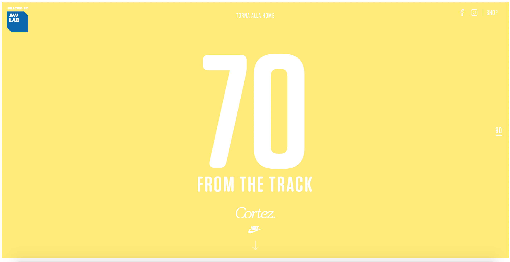
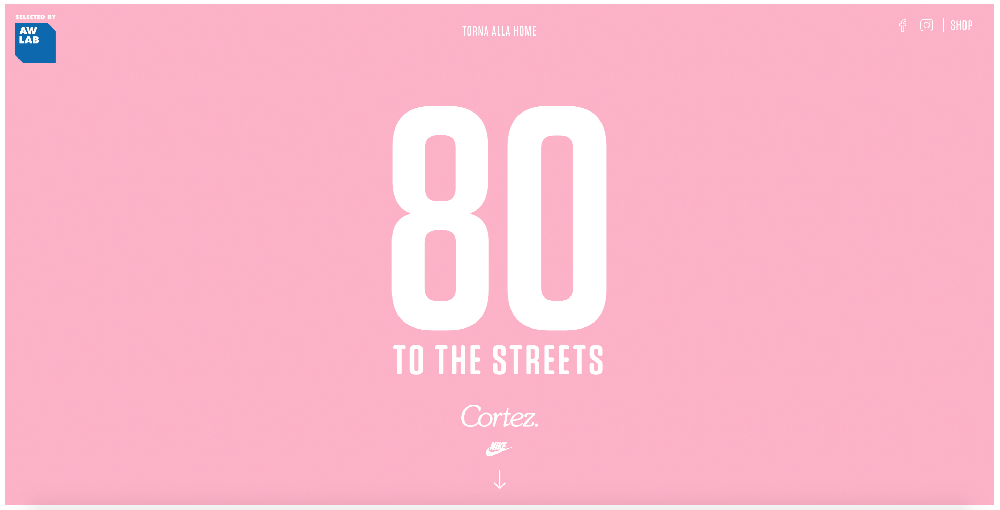
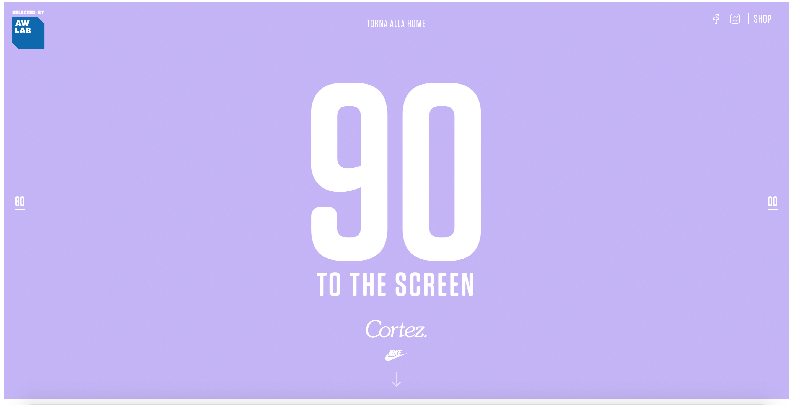
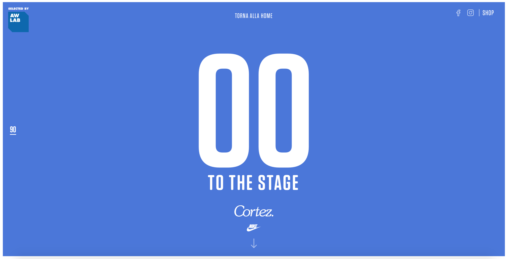
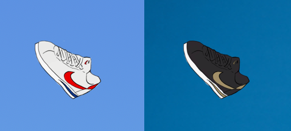

start exploring
ranking

This is a website for Nike's Cortez sneaker, celebrating its anniversary. It is one of Nike's longest running sneakers and has recently been relaunched as a fashionable lifestyle sneaker, although it first became popular as a running sneaker. The content of the website is organized into four different time periods; the 70s, the 80s, the 90s and the 2000s. Each time period in the website is characterized by a themed photoshoot, a different color scheme and style tips.
When you hover over the links to the different pages on the Home Page, the background of the home page changes to a video of the photoshoot that is featured in each different page. This gives you a short 'teaser' of what to expect on each page. The site's cursor is in the shape of the Nike Cortez shoe. When you hover over a clickable element the shoe changes from a white shoe to a black one. The site uses a lot of bright colors and gradients, which appeals to its young target market. The colors are also used to differentiate between the different pages. The site has great animations; when you scroll down, the images fly into the page from the left and right. Clicking on the images also takes you to a page where you can buy the shoes. Even though all of the text is in Spanish, the main message and theme of the site(that the Cortez shoe is timeless and fashionable)is still easily understood.
The home button is almost unnoticeable in small text at the top of the page. Some of the images continue to move around once they have floated in from the left or right. This is quite distracting and annoying. The headings of the "Style Tips" should be bigger than the text. My eye was first drawn to the body copy and then the heading. The text is also all in Spanish. The site doesn't allow you to change that. But overall this site is well thought out, fun and easy to nagivate, with clever animations and interactions. There isn't a lot that I don't like about it.
Scrolling through the 70s Page - notice how images float in.
The top of the pages for each time period. Each has a unique, bright color.
   The Awesome Cursor - hovering over a clickable element turns the shoe black.
